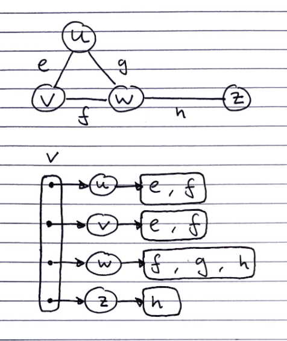
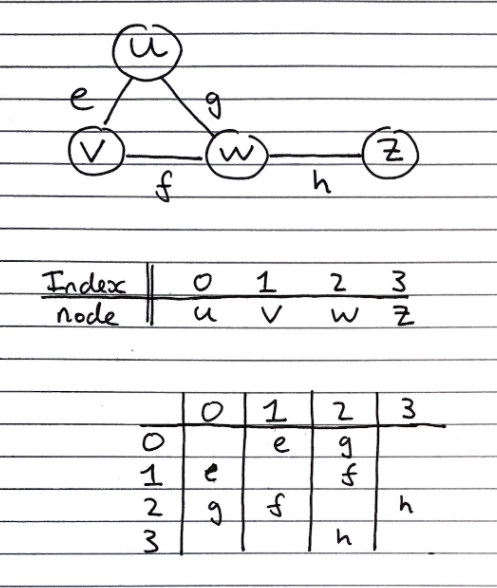

Graphs as a mathematical concept
Graphs are defined as a pair \(G = (V, E)\) were \(V\) is a set of vertices, and \(E\) is an unordered collection of pairs of vertices, called edges, for example: \(G = (\{a, b, c\}, [(a,b), (b,c), (c,a)])\)
Directed and undirected graphs
-
In undirected graphs, the edge pair indicates that both vertices are connected to each other
-
In directed graphs, the edge pair indicates that the first vertex is connected to the second, but not vice versa
| Term | Description |
|---|---|
| Adjacent Vertices | Vertices with an edge between them |
| Edges incident on a vertex | Edges which both connect to the same vertex |
| End vertices/endpoints | The two vertices in the pair that an edge connects to |
| Degree of a vertex | The number of edges that connect to a pair |
| Parallel edges | Two edges both connecting the same nodes (This is the reason why edges are an unordered collection, not a set) |
| Self-loop | An edge whose vertices are both the same |
| Path | A sequence of alternating vertices and edges, starting and ending in a vertex |
| Simple paths | Paths containing no repeating vertices (hence are acyclic) |
| Cycle | A path starting and ending at the same vertex |
| Acyclic | A graph containing no cycles |
| Simple cycle | A path where the only repeated vertex is the starting/ending one |
| Length (of a path of cycle) | The number of edges in the path/cycle |
| Tree | A connected acyclic graph |
Graph properties
Property 1. The sum of the degrees of the vertices in an undirected graph is an even number.
Proof. Handshaking Theorem. Every edge must connect two vertices, so sum of degrees is twice the number of edges, which must be even.
Property 2. An undirected graph with no self loops nor parallel edges, with number of edges \(m\) and number of vertices \(n\) fulfils the property \(m \leq \frac{n \cdot (n-1)}{2}\)
Proof. The first vertex can connect to \(n-1\) vertices (all vertices bar itself), then the second can connect to \(n-2\) (all the vertices bar itself and the first vertex, which it is already connected to), and so on, giving the sum \(1+2+...+n\) , which is known to be \(\frac{n \cdot (n-1)}{2}\)
Fully connected graphs fulfil the property \(m = \frac{n \cdot (n-1)}{2}\)
Graphs as an ADT
Graphs are a “collection of vertex and edge objects”
They have a large number of fundamental operations, to the extent it is unnecessary to enumerate them here, but they are essentially just accessor, mutator, and count methods on the vertices and edges
Concrete Implementations
Edge List Structure
Consists of
-
1 list of vertices
-
1 list of edges, each of which contain references to their endpoint vertices

Adjacency list
Consists of
- 1 list containing all of the vertices. Each of which have a pointer to a list edge objects of incident edges.

Adjacency matrix
Consists of
- 2D array acts a lookup table for whether vertices have an edge connecting them
- Square matrix, with each dimension being the number of vertices in the graph
- Undirected graphs are symmetrical along the leading diagonal

Subgraphs
A subgraph of the graph \(G\) fulfils the two properties:
Its vertices are a subset of the vertices of \(G\)
Its edges are a subset of the edges of \(G\)
A spanning subgraph contains all of the vertices in \(G\). This then gives rise to spanning trees, which are spanning subgraphs which are connected and acyclic.
- A spanning tree is not unique unless the graph is a tree.
Depth-first search
Depth-first search is a general technique for traverse graphs. It takes \(O(n + m)\) time to search a graph of \(n\) vertices and \(m\) edges.
Informally, it can be described as always proceeding to its first adjacency, then backtracking when it reaches a vertex with no adjacencies which it has not explored already
Algorithm DFS(G,v):
Input: A graph G and a vertex v of G
Output: Labelling of edges of G in the connected component of v as discovery edges and back edges
setLabel(v, "visited")
for all e in G.incidentEdges(v)
if getLabel(e) = "unexplored"
// Get vertex w, that's opposite vertex v across edge e
w <- opposite(v,e)
if getLabel(w) = "unexplored"
setLabel(e, "discovery")
DFS(G,w)
else
setLabel(e, "back")
It has the following properties
- It visits all vertices and edges in any connected component of a graph
- The discovery edges form a spanning tree of any graph it traverses
Uses Cases
It can be used for path-finding by performing the traversal until the target node is found, then backtracking along the discovery edges to find the reverse of the path.
- This is done by altering the DFS algorithm to push visited vertices and discovery edges as the algorithm goes through them.
- Once the target vertex is found, we return the path as the contents of the stack
It can be used to identify cycles, as if it ever finds an adjacency to a vertex which it has already explored, (a back edge), the graph must contain a cycle.
- A stack is again used for the same purpose.
- When a back edge is encountered between a node v and another node w, the cycle is returned as the portion of the stack from the top to until node v.is
Breadth-first search
Breadth-first search is a technique to traverse graphs. It takes \(O(n + m)\) time to search a graph of \(n\) vertices and \(m\) edges.
Informally, it can be described as exploring every one of its adjacencies, then proceeding to the first adjacency, then backtracking when it reaches a vertex with no adjacencies which it has not explored already
Algorithm BFS(G)
Input: graph G
Output: Labelling of edges and partition of the vertices of G
for all u in G.vertices()
setLabel(u, "unexplored")
for all e in G.edges()
setLabel(e, "unexplored")
for all v in G.vertices()
if getLabel(v) == "unexplored"
BFS(G,v)
It has the following properties
- It visits all vertices and edges in \(G_s\), the connected component of a graph \(s\)
- The discovery edges form a spanning tree of any graph it traverses
- The path between any two vertices in the spanning tree of discovery edges it creates is the shortest path between them in the graph
It can be used for path-finding by performing the traversal until the target node is found, then backtracking along the discovery edges to find the reverse of the path.
It can be used to identify cycles, as if it ever finds an adjacency to a vertex which it has already explored, (a back edge), the graph must contain a cycle.
Applications
We can specialise the BFS algorithm to solve the following problems in \(O(n+m)\) time.
- Compute the connected components of G
- Compute a spanning forest of G
- Find a simple cycle in G, or report that G is a forest
- Given two vertices of G, find a path in G between them with the minimum number of edges, or report that no such path exists.
DFS and BFS visualization
The site linked here traces the steps of DFS either or BFS, and one can specify whether each node is connected, as well as whether the graphs are directed or undirected